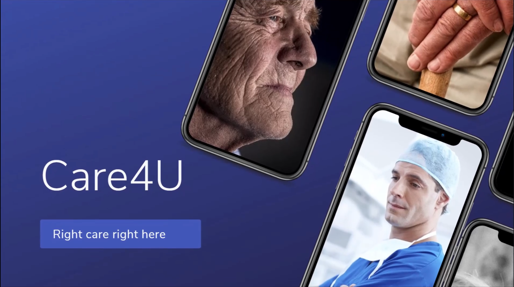

Air Cargo Shipment optimization under Prof. Manoj kumar Tiwari, Department Of Industrial and Systems Engineering,May 2019-July 2019
Developed an linear programming model for minimizing the cost of an air cargo shipment using concept of Integration,consolidation and deconsolidation. Solved the model
using a heuristic ant colony optimization algorithm in python. This significantly increases the profit of the freight forwarders.
GitHub Code is available here

Care4U | Artificcial Inteligence based Elderly health Care Application
Built two android applications (in Android Studios) one for the elderly people and one for the caregivers.
The app for the elderly people had a neural net trained on the MOBIACT dataset stored as a tensorflow lite model in the phone to detect falls and alert the caregiver.
Used AWS rekognize to detect the emotion of the person and keep a record of the emotions with a timestamp in the application of the caregiver.
Used IBM Watson to create a personalized multilingual voice controlled chatbot for the elderly person. The chatbot is automatically updated with the mood of the
person and accordingly fine tunes the conversation with the elderly person. If the person in sad ,it can automatically play funny videos or a nostalgic song to cheer up the
person. It can also look up for doctors nearby, search for hospitals, give a call to any of the contacts including the caregiver.
The app keeps track of medical history, allergy history as well as give medicine reminder to both the elderly as well as the caregiver. The medicine to be taken can be added as
a image and the app will automatically update its database in FireBase with the name of the medicine using text recognition in images.
Real time Location tracking as well as a pedometer is built in as features of the app.
This app was built as a part of a Hackathon . The major sponsors were Capgemini, Network
Marvels, Adapty and NVIDIA. The App got nation wide media coverage by
Hindusthan Times,
India Today
jagranjosh

CynoSure | One stop solution for every transortation Problem
The app allows users to do real-time bus/autorickshaw tracking and also gives them estimate time of waiting at the bus stop along with
estimated journey time so that they can optimize their journey schedules accordingly.
It also gives them the option of choosing from either cheapest or fastest means of transport available.
Gives them all possible combinations of traveling options.
The app also shows the users how crowded a bus is and accordingly lets them choose whether they want to travel via this bus or wait or the next one.
The dilemma that users face is if they leave a bus just right now they don’t know how long will they have to wait for the next bus
but our app addresses that by showing all the bus that is going to pass through that route and with an estimated time of arrival,
estimate time of journey and an estimated crowd.
Thus making the whole journey predictable.
Automated the Teaching Feedback System at IIT KGP | (Self Project)
Self project to automatize the teaching feedback system for more than 10000 students
Used Selenium in python to automatize the web browser action and Tesseract OCR to break the captcha code
Achieved 4x increase in the review filliup process.
The Project Presentation cum report can be found
here . The Team certificate is available
here.